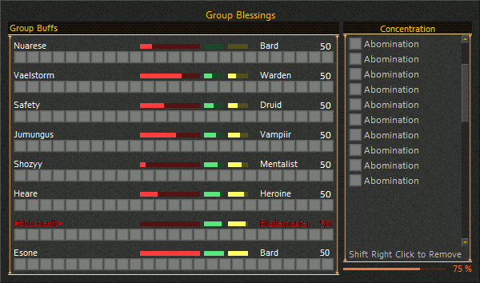

This option allows you to chose this style for the Concentration window.
This style of Concentration window is a combination of the Group Buff and Concentration windows. The left side of the window displays each group member and the buffs that are currently cast on each. The right side of the window displays a list of each concentration buff you have cast along with the names of the players they are on. The remaining amount of your buff concentration "pool" is displayed at the bottom of the buff list. In addition, the current health, endurance, and power status for each group member is shown. You can select a group member by clicking on their name.
